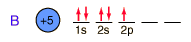

Boron
Boron forms brilliant transparent crystals, nearly as hard as diamond. The compound boron carbide, B4C, is the hardest substance known next to diamond. It has found extensive use as an abrasive and for the manufacture of vessels for grinding very hard substances.
Boric acid, H3BO3, is a very weak acid which is used in medicine as a mild antiseptic. Boric acid is a white crystalline solid which is found in nature in some volcanic steam jets in central Italy. It is volatile enough to be carried along by the steam.
Vast deposits of boron are found in California in the form of the minerals borax (sodium tetraborate decahydrate, Na2B4O7. 10H2O), kernite (sodium tetraborate tetrahydrate, Na2B4O7. 4H2O), and colemanite (calcium hexaborate pentahydrate, Ca2B6O11. 5H2O).
Boron is found with magnesium in the oxide minerals inderite and kurnakovite. Boron with calcium forms the oxide inyoite. Boron with calcium and sodium forms the oxide proberite. The boron compound hulsite contains iron, tin and magnesium. Aluminum with boron and fluorine form the oxide (borate) Jeremejevite.
Boron is also found with calcium in the silicate minerals danburite, datolite and Howlite. Boron appears with lithium and sodium in the silicate elbaite . Boron appears with magnesium and aluminum in the silicate kornerupine. Boron appears with calcium, aluminum and manganese in the borosilicate manganaxinite. Boron with potassium and sodium are found in the silicate poudrettite.
Boron appears with magnesium in the fibrous mineral Szaibelyite and in the mineral boracite. Boron is found in the sulfate mineral Charlesite.
With beryllium, boron forms the oxide mineral Hambergite. Zirconium appears with boron in the oxide mineral painite, which is very hard (MH =8) and sometimes of gem quality.

|